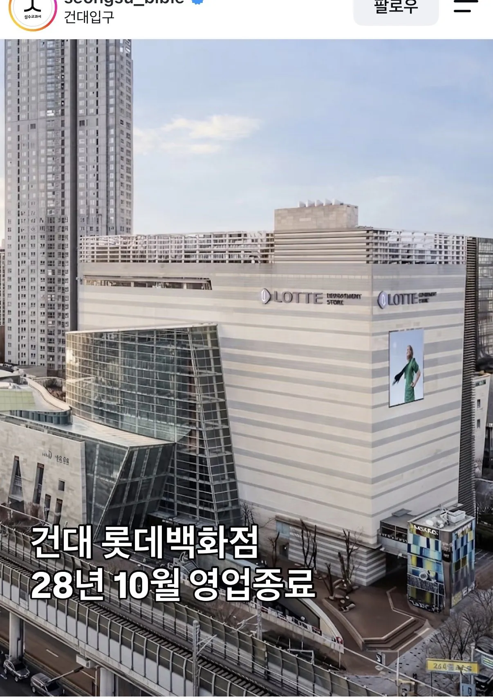
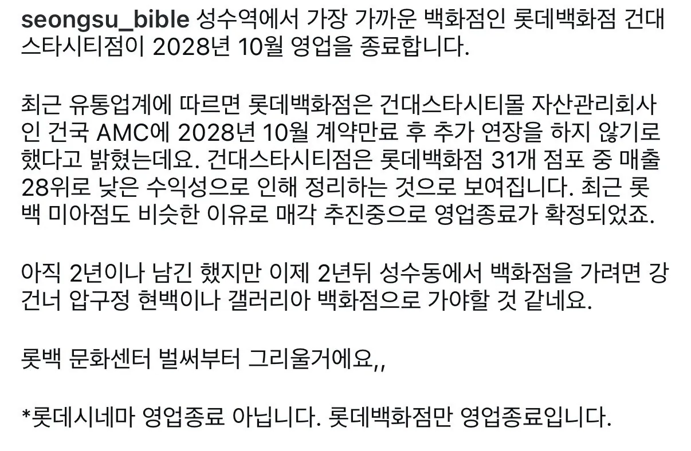

사람 ㅈㄴ없긴하더라
유니클로 감사제 때만 사람 좀 있고
건대 상권이 휘청이는건 아닐텐데 뭔일이래
강북은 백화점도 개작살나는구나 시발....
아니 그렇다기엔 사실 저기가 강북취급받을 동네도 아닌데
상권과 별개로 예전부터 저기 가는 사람 없었음
상권이래봐야 대학생들 다니는곳
엠티가기전에 장보는곳
건대 먹자길도 완전 망해가던뎅ㅜㅜ 메인스트릿 1층 가게 여러개가 무권리임대 나오고 난리임
저긴 그냥 술만먹는곳이라
이제 술 안먹으면 가는거지
여기 사람 생각보다 없긴했음
다른데에 비해서 사람 존나 없는편임
주말에 그렇게 느껴질정도인데
센틈 롯데도 허물고 주복올려라 그게 더 돈될듯
롯데백화점없어지고 뭐가들어올라나
편의점
면적 그래도 꽤 넓은 편이라,
단일매장으로 들어온다면 건대스타필드정도나 생기려나
그러기엔 코엑스랑 또 너무 가깝긴 한데
매출때문이면 노원도 망하려나...
노원롯데는 매출이 생각보다 상위권임
자리가 안좋다기보단 타겟이 백화점 갈사람들이 아니라서..
중랑구나 중곡동 광장동은 구리쪽 롯데백화점 가야 되겠다 저게 닫게되면
이젠 진짜 대학생들도 돈 없는 시대가 왔다
미아 롯데도 없어진다더라
저기 갈바엔 잠실가겠지
한적해서 종종가는데 뭐가 들어올라나
본인들도 백화점 잘 안가자나
그럼 없어지는게 맞지
요즘 백화점 자체가 소비하는곳보다는 체험하는곳으로 바뀌는 추세라 돈 안되는 지점들 정리하는듯
15년전에 닫았어도 이상하지않았을곳 ㅋㅋㅋ
회사에서 명절때 현백 상품권만 맨날 주는데, 사실상 갈일이 없다...
이게 위치가 좀 아쉬운게 갈사람들은 갈거같은데 교통이너무복잡하고 광진구민들은 기존에가던 테크노마트에있는 롯데마트가서 장을 많이보는데 또 롯데가있으니까 기존에가던데가는거같고 중요한건 광진구 테크노마트가 위치가 너무좋아서 아파트단지 사이에 딱 있어서 장보러가기가좋음 구지 건대까지 가질않아도됨 건대에는 아파트가 많지가않고 학생들이많고 그래서 진짜 데이트하러가끔오거나 가끔옷사러오는사람들이전부...
아쉬운점은 테크노마트가 9월에 엔터식스가 나가면서 옷을 파는장소가 별로없음 심지어 지금은 동서울터미널 임시터미널로 쓰게되면서 진짜 딱 영화만보고 장보러가는사람들만가고 2층부터 나머지층은 공실텅텅임 ㅜ
저기는 왜 안없어지지라는 생각했는데 없어지는구나